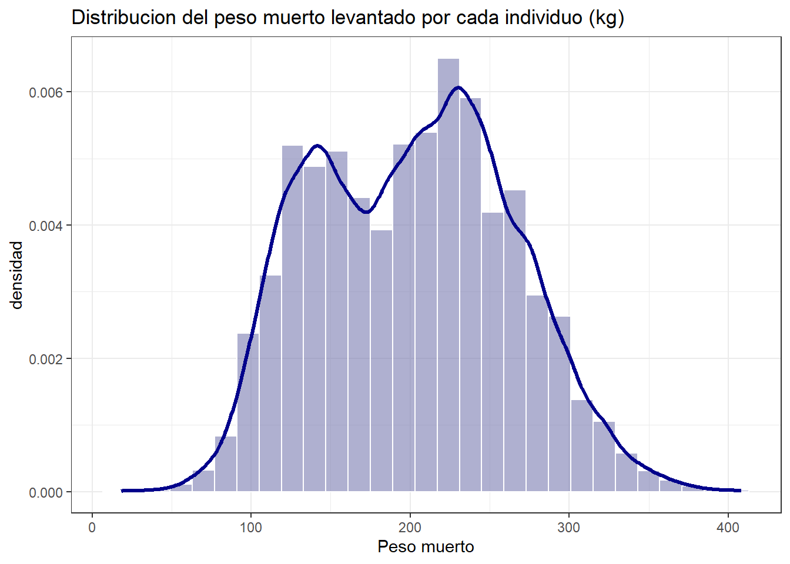
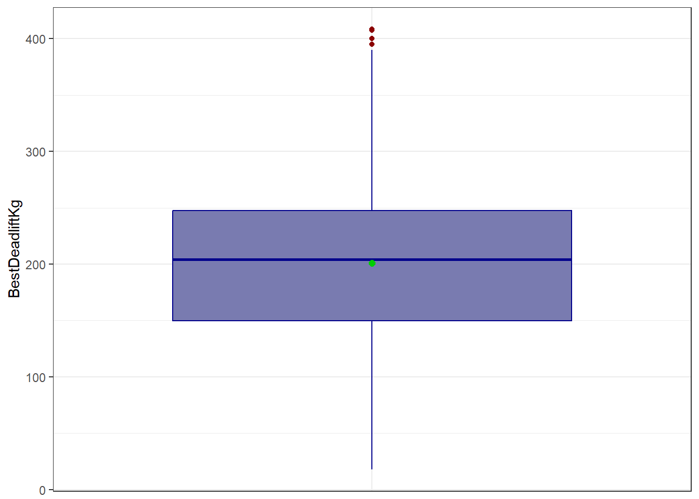

6 Analisis exploratorio de BestDeadliftKg (target)
df %>%
summarise(n=length(BestDeadliftKg),
Media=mean(BestDeadliftKg),
Ds=sd(BestDeadliftKg),
Mediana=median(BestDeadliftKg),
RIC=IQR(BestDeadliftKg),
Q1=quantile(BestDeadliftKg,0.25),
Q3=quantile(BestDeadliftKg,0.75),
Mínimo=min(BestDeadliftKg),
Máximo=max(BestDeadliftKg),
Asim=skewness(BestDeadliftKg),
Curtosis=kurtosis(BestDeadliftKg)) %>%
kable(caption = "Caracterización") %>%
kable_styling(bootstrap_options = c("striped", "hover", "condensed"),
full_width = TRUE) %>%
scroll_box(width = "100%")| n | Media | Ds | Mediana | RIC | Q1 | Q3 | Mínimo | Máximo | Asim | Curtosis |
|---|---|---|---|---|---|---|---|---|---|---|
| 18900 | 201.1228 | 62.17163 | 204.12 | 97.6425 | 149.8575 | 247.5 | 18.1 | 408.23 | 0.1097141 | 2.333665 |
1. Medidas de tendencia central:
Media = 201.1228 kg | Mediana = 204.12 kg
Aquí la media y la mediana son muy cercanas entre sí (201.12 vs 204.12), con la media apenas por debajo de la mediana. Esta pequeña diferencia sugiere una distribución bastante simétrica, sin una asimetría marcada hacia ningún lado. El valor “típico” se ubica entonces alrededor de 201–204 kg.
2. Medidas de dispersión:
DS = 62.17163 kg | RIC = 97.6425 kg
La desviación estándar representa cerca del 31% de la media, lo cual indica una dispersión moderada-alta. Esto es coherente con un contexto donde existen categorías o rangos amplios entre los distintos casos, por lo que se espera una variabilidad considerable en los valores.
3. Medidas de posición:
Q1 = 149.8575 kg | Q3 = 247.5 kg | Mínimo = 18.1 kg | Máximo = 408.23 kg
El 50% central de los datos se ubica entre 149.8575 y 247.5 kg, un rango de unos 97.6425 kg, que corresponde al RIC. El rango total, sin embargo, es mucho más amplio (18.1 a 408.23 kg, casi 390 kg de diferencia), lo que muestra la presencia de valores extremos tanto por debajo como por encima del rango central.
4. Medidas de forma:
Asimetría = 0.1097141 | Curtosis = 2.333665
Asimetría (0.1097141): es un valor muy cercano a 0, lo que indica una distribución prácticamente simétrica, con una leve tendencia hacia la derecha. Esto concuerda con lo observado en el punto 1, donde media y mediana son casi iguales.
Curtosis (2.333665): al estar por debajo de 3, indica una distribución platicúrtica, es decir, más “achatada” que una distribución normal, con colas más ligeras y una concentración de datos menos pronunciada alrededor de la media. En conjunto, ambas medidas de forma sugieren una distribución cercana a la simetría, aunque más aplanada que la normal.
6.1 Grafico tipo histograma
df %>%
ggplot(aes(x=BestDeadliftKg))+
geom_histogram(aes(y=after_stat(density)),
binwidth=14,
fill="#797bb0",
color="white",
alpha=0.6,)+
geom_density(color="darkblue",linewidth=1.2)+
labs(title='Distribucion del peso muerto levantado por cada individuo (kg)',
x='Peso muerto',
y='densidad')+
theme_bw()
La distribución es aproximadamente simétrica (por su valor de asimetría), con una asimetría leve hacia la derecha (sesgo positivo pequeño). La mayor concentración de datos está entre los 150 y 250 kg aproximadamente, con el pico más alto ubicado alrededor de los 200-230 kg. Se observa también un pico secundario, más pequeño, cerca de los 130-150 kg, esto es coherente con la curtosis de 2.3337, que indica una distribución platicúrtica (ligeramente más aplanada que una normal, sin una concentración muy marcada en un solo punto). El valor de asimetría (0.1097), que al estar muy cerca de 0 confirma que el estiramiento hacia los valores altos es leve y no pronunciado.
6.2 Grafico de cajas y bigotes
df %>%
ggplot(aes(x = "", y = BestDeadliftKg))+
geom_boxplot(fill="#797bb0",color="darkblue",
outlier.color='darkred')+
stat_summary(fun=mean, geom='point', shape=20, size=3, color='green3')+ #colocar un punto en la media
theme_bw()+
theme(axis.title.x = element_blank(),
axis.text.x = element_blank(),
axis.ticks.x = element_blank())
El boxplot muestra la caja central entre 149.86 y 247.5 kg (Q1-Q3), con la mediana muy cerca de la media y ligeramente por encima de ella, lo cual es consistente con la asimetría leve y casi simétrica ya identificada. Los bigotes van aproximadamente de 18 a 390 kg, y se observan algunos puntos atípicos por encima de 390 kg (hasta cerca de 400-410 kg), que corresponden a los valores más altos del peso muerto, probablemente de atletas en categorías de peso pesado o superpesado. Estos pocos outliers hacia arriba son coherentes con la ligera cola derecha observada en el histograma.